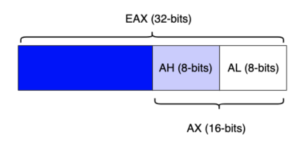

General Purpose Registers (GPRs)
There are different types of registers,
General Purpose Registers (GPRs) are nine high-speed CPU storage locations that can store both data and addresses.
When we say a register "stores a pointer" or “points” to an address means that the register store the value of that address that can be between 0 and 0xFFFFFFFF
Registers for x86 architecture (32 bit)
| Naming Convention (for x86 architecture) | Name | Purpose |
|---|
| EAX | Accumulator | Arithmetical and logical instructions |
| ECX | Counter | Loop, shift, and rotation counter |
| EDX | Data | I/O port addressing, multiplication, and division |
| EBX | Base | Base Pointer for memory addresses |
| ESP | Stack Pointer | Pointer to the top of the stack |
| EBP | Pase Pointer | Pointer to the base of the stack (aka Stack Base Pointer, or Frame pointer) |
| ESI | Source Index | Used as a pointer to a source in stream operation |
| EDI | Destination Index | Used as a pointer to a destination in stream operation |
| EIP | Instruction Pointer | controls the program execution by storing a pointer to the address of the next instruction (machine code) that will be executed. |
Naming conventions comparison
| x64 (64bit) | x86 (32bit) | 16 bit | 8bit |
|---|
| RAX | EAX | AX | AH , AL |
| RCX | ECX | CX | CH , CL |
| RDX | EDX | DX | DH , DL |
| RBX | EBX | BX | BH , BL |
| RSP | ESP | SP | SPL |
| RBP | EBP | BP | BPL |
| RSI | ESI | SI | SIL |
| RDI | EDI | DI | DIL |
8 bit CPUThese types of CPU had 16-bit register split in two parts
L → identifies the low byte
H → identifies the high byte
16 bit CPU16-bit naming convention combines the L and the H registers, and replaces it with a unique register X.
If a register has only a low byte(L), this naming convention simply remove the L
32 bit CPU the register acronym is prefixed with an E that mean extended
64 bit CPUthe register acronym is prefixed with an R
